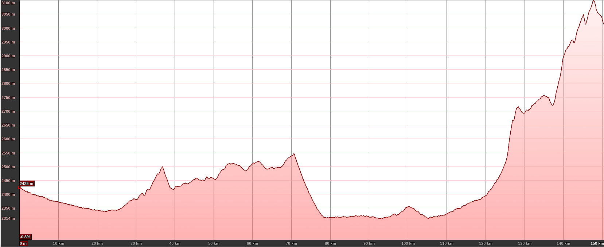
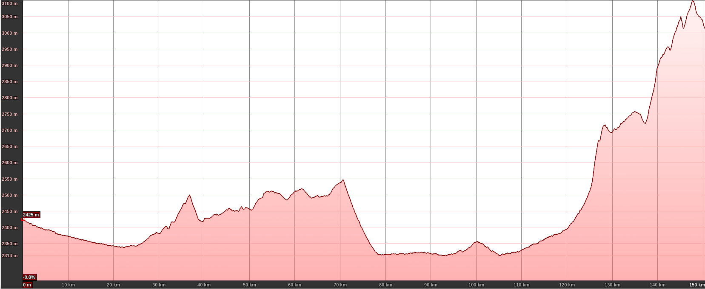

publication date 2022/08/01
I visited the Monturaqui impact crater two times in 2016 and 2019.
The crater is quite isolated and the roads/tracks to reach it are in very bad status.
For this reason I collected here some travel trip suggestions for visiting the place.
DISCLAIMER: This trip could be done only by expert off-road drivers, due to the terrible status of the track in the last 15 km, and the remoteness of the area.
PLEASE take all the necessary precautions if you plan to go to this place.
I take no responsibility implicit or explicit for any improper use of the information contained in this page, and for any damage or any situation resulting from reading and using this page.
The crater is in the Antofagasta region, in Chile at coordinates 23°55'41.40"S 68°15'41.91"W. There is no telephone network in a radius of about 40 km from the crater itself, in the same radius there is no any source of water, and no one lives in the same radius. The altitude of the crater is significant because it is at 3000 m.a.s.l. Pay particular attention to the solar radiation because is almost sunny every day and the radiation is extremely strong, so use long clothes and a high factor solar protector on exposed part of the body and especially the lips.
Till now it is the only recognized impact crater in Chile, and it has a diameter of about 400 meters, and was probably formed 600 thousands years ago by the impact of a metallic meteorite. Analysis of the crater have shows that there are no fragment left of the original meteorite. Probably most of them were recollected in pre-incaic/incaic times since the crater is located at few hundred meters from the Inca road that connected in straight line Peine with Copiapo.
Flight from Santiago (SCL) to Calama (CJC), do not make the mistake to take the flight to the Desierto de Atacama Airport (CPO) that is 550 km south of San Pedro de Atacama. At Calama airport rent the 4x4 car. For security reason plan to go with in 2 cars with experienced drivers of off-road. Buy all the food, water and other stuff in the mall in Calama, because San Pedro de Atacama has only some small shops were you can found bread, fruits, general meal, but they are not very big shops, and maybe you cannot encounter what you need. Drive from Calama to San Pedro de Atacama, and pass the night here.
Before leaving for the crater, be sure to contact the Carabineros de Chile (in Padre La Paige in front of the church of San Pedro de Atacama) and provide them the full information about your trip details. (Carabineros de Chile are the only ones that can help you in case of problems, i.e. mechanical problem with the cars, etc). The last gasoline station is also in San Pedro de Atacama, just outside of the town.
The length of the trip is 150 km with a total elevation gain of 1500m and loss of 900m, at altitudes above 2500 m a.s.l.
The best thing to do in case of problems is to have an additional tank of gasoline, that could be buy in the gasoline station.
 

Google Earth (approximate) driving path
Part 1: from San Pedro de Atacama to intersection C-23 with B-379 (76 km)
map(OpenStreeMap)
Drive from San Pedro de Atacama to the south east along the road n. 23 that border the Salar de Atacama.
Along the road you encounter the access portal to the astronomical observatory of ALMA.
Pass trough Toconao, 3 km after this village there is an intersection with road B-39.
Route B-39 go straight to Peine but is not paved with asphalt, instead is covered with bischofita (a mix of salts used for
paving roads in Chile)
and hence is slower than route n.23 but provides much more beautiful panorama of the Salar de Atacama passing really close to many vegas where many birds can be spotted.
Continue straight along route n.23 for about 30 km, and take the road B-379 on the right (direction Peine).
Along the road you cross the Tropic of the Capricorn!

Part 2: from intersection C-23 with B-379 to Tilomonte (43 km)
map(OpenStreetMap)
Follow it for 7 km up to the intersection with road B-39, take on the left for another 23 km till reaching Peine
(a very old village with many historical buildings and rock art).
Pass the town and follow the main road for about 11 km in direction Tilomonte/Tilopozo/Antofagasta.
Part 3: from Tilomonte to Monturaqui crater (37 km)
map(OpenStreetMap)
The main road go toward a lithium mine, take the intersection to the left (road B-355, see the photo below) in direction Tilomonte for about 1 km.

Now you encounter an non signalled intersection and take to the right, without entering in Tilomonte,
the first few kilometres are difficult because the road disseminated by rocks (the road pass in an alluvial fan).
Along the road you can notice many granite rocks that were carved by the wind like the following one.

Drive with caution for the next 15 km, then go up the hill, and at its top you can have a paramount vision of volcanoes
Pular and Socompa
(known for it's big debris avalanche).


When you descend from the flat you will cross an high voltage line,
here take the track on the right and follow it for about 500 m, then take the track on
the left that climb the hill.
The next photo, is taken 1 km after the begin of the ascent, looking backward.
Road B-355 (the one you have done till now) could be seen coming from the left and crossing the electrical towers.
Just before the crossing, there is an intersection, that is the one previously described.

In the following
map(OpenStreetMap)
you can see zoom of the last 15 km.
This part is the most difficult part of the track for about 8 km, that is in REALLY BAD condition (in 2019).
The floodings in the of period 2017-2018, have almost cancelled the previous existing track
and in some point is completely missing, obliging you to drive completely off-road
in some potential dangerous situations due to the presence of many cliffs on the nearby creek.
A pair of shovels and a pair of traction tracks could help passing the most difficult part of the road.
However I strongly suggest to have a look to some site for the right off-road equipment.
Once you safely passed the difficult part and reach these coordinates 23°56'51.51"S 68°16'45.89"W a pile of rocks between two electrical towers indicates a track going north, descending toward a small creek.
Now follow the track for about 1.5 km, you first found a pirca (house made with rocks).

This is the actual best place to station the car for not damaging the site of the crater.
With a short walk following the track for about 1.5 km you will reach the rim of the crater.
And enjoy the crater!
For preservation of the site, when you are in the crater and in the surroundings,
please do not collect any rocks, do not make excavations also do not interfere
with the site moving elements, or damaging rocks, plants, animals.
Some people already caused damages to the site entering with cars and trucks to
the bottom of the crater, other have made illegal excavations, do not copy those unfair behaviour.
See in the next photos what was done by some illegal excavation in the crater.


Go to the science trips index
Next article